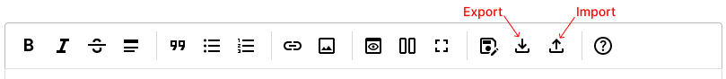

You can export IMP! content as markdown file. All it's properties, like custom HTML, title, description will be exported as YAML frontmatter (see below).
You also can import markdown to IMP!, and if some IMP! settings where specified in frontmatter, they will be added to resulting IMP! page.
Export and Import buttons are located at editor toolbar here:

titledescriptionimageiconfilenamefootercssheadHTMLviewCSSauthorkeywordsNote: Field editor with custom path to editor script won't be imported!
You may try experimental ImpHatcher utility. It will produce files, compatible with 0.3 version of IMP!.